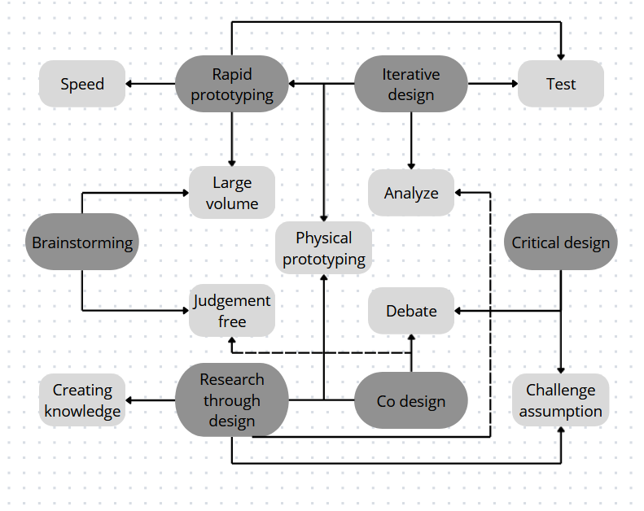

To create a programming metaphor, I adapted my building blocks to be show memory storage
The initial idea is quite simple. Since the building block's most basic shape is linear,
it already can be used to represent memory. However, it misses the capability to actually store something.
To give the block this capability, we create a space to store something in the block.
Or rather, we remove material from the block.
arrays
Now when multiple of these blocks are put behind one another it can represent basic memory, but we can go further.
We also have a representation of a memory block array, by putting a number of blocks behind one another and adding a basic
building block that functions as Null termination of the array
What about a linked list? We need some way to physically represent pointers. Since pointers just point to a certain bit of memory,
we can represent this by some sort of connection that's seperate from the regular linear connection.
In practise, this means we can just add another dovetail connection on to the side of the memory block.
This should just be seen as a pointer and not a splitting memory path, so we show this by making this connection
just one dovetail instead of the regular two connecting points.
Issues
Sadly, one of the prints has issues when it comes to the dovetail fit, shown on the right side of the picture.
When compared with the other pieces, left, it's visible that the dovetail connections are slightly rounded over.
On a second print, this issue persists. So perhaps there is an issue with the model of this block
or perhaps the printing just ran out of luck.
Design methods overview

Design methods in robotics
Robust robot navigation in real-world environments
A common problem in robotic navigation are non controlled environments.
This can range from simply an uneven ground to outright rocky terrain
with obstacles. A tinkering environment will be set up to function as
a mock version of the true environment. A number of materials will be
given that can represent the possible ways of moving around the space,
this could be different types of wheels, or even robotic legs
that can be easily attached to a platform that represents the body of
the robot. Additionally, different types of materials that represent
obstacles can be supplied such that the environment can be made more
difficult or more realistic. This version of tinkering would allow the
people working on the issue of the navigation, to get hands on and try
out different ideas and combinations to solve the challenge.
The target group would be people developing robust robot navigation tools.
Given that this group would already have experience with robotic control,
it is not likelely that they will need additional scaffolding in how to
interact with the robotic parts or the environment. Beneficial scaffolding
could be instructions on how to exactly connect to motorized parts to
the main body. If the obstacles get difficult enough that they need to be
avoided instead of traversed, an introduction on pathfinding algorithms,
like the A*-algorithm, could be beneficial.
A suitable goal would be to have a robot that can reliably cross the
most difficult environments. Suitable assignments to work towards this
goal would be starting by getting a robot that can cross an empty area
and then adding more obstacles for each following assignment.
Adaptive Grasping for Unknown Objects
Robots often work on picking up different objects. If the shape, size and materials of these objects are known,
then it is not especially difficult to create a way to pick up the objects. However, if the objects that
needs to be picked up is not always the same item, then things get more difficult.
For these cases, special ways of grasping the object are required.
By using a tinkering playground, different concepts for how to create a gripper
can emerge.
As for the tinkering materials, the tinkerers would be supplied with
a number of different flexible materials as well as firm materials, and
a number of different sensors. Rather than supplying the a gripper without claws,
the participants would be supplied with a number of motors that can be attached together.
This should give rise to different types of gripper actuation that may work better than the standard pincer type gripper.
Since this sort of gripper can have a lot of variability based on
the type of object that needs to be picked up, physically tinkering
with possible designs can lead to more surprising outcomes.
The target group would be people working with robots that need to
be able to grasp different and possibly fragile objects. While
they would likely be familiar with the different types of materials
and sensors, some scaffolding in the form of a guide on making a basic
pincer gripper would be quite effective.
A suitable goal would be creating a gripper that can pick up multiple
different types of fragile objects one after another. To achieve this,
a first assignment could be picking up something in the first place.
Followed by assignments where the requirement is to pick up increasingly
odd shaped items.
Failure recovery
For autonomous robots it is important to be able to handle unexpected
situations. In case of a complete failure in one of those situations,
it is a benefit if a robot can recover from that failure without
external input. A comman failure method is robots getting stuck
during their pathfinding or to physically get stuck. Think of a roomba
stuck on a 'cliff' when it slightly hangs over an edge. To design
a solution for this type of failure recovery after getting stuck,
tinkering could yield good results by virtue of its hands-on nature.
To keep the 'unstucking' methods as broad as possible, part of the
suppplied material would be a number of different robots such that
the manner in which they get stuck will differ. Then, further materials
would be supplied that can be used to have the robot perform failure
recovery. These materials could be different actuators and static
hardware.
The target group would be people working with autonomous robots.
For the scaffolding, some ways in which robots perform failure
recovery methods could be recreated. This could for instance be
recreating examples from the way robotdogs right themselves after
falling over, but it would depend on what exact type of robots
would be available. A perfect goal would be finding a way to
enable all the possible robots to not get stuck with the same solution.
A reasonable goal would be to find a way for each of the robots
to complete some sort of failure recovery, which would double as
the different suitable assignments.